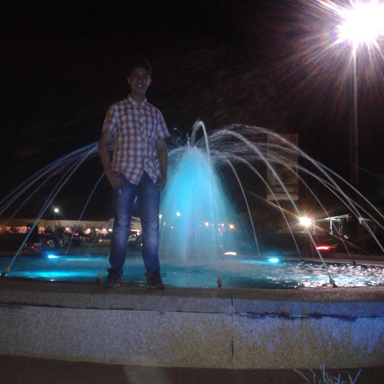

Infancia

Naci en Venezuela, el 05 de Junio del 2001, me crie con mis abuelos y mis primos, en ciudad bolivar
Naci en Venezuela, el 05 de Junio del 2001, me crie con mis abuelos y mis primos, en ciudad bolivar

En mi adolecencia me mude a Maturin, una ciudad de Venezuela alli hice hasta 4to de secundaria, despues regrese a puerto ordaz y alli me gradue de bachiller
Actualmente vivo en españa, estoy estudiando DAW(Desaroyo de aplicaciones web) y trabajo los fines de semana
Cuando era joven, me gustaba mucho la informática y la seguridad. Un día, se me ocurrió la idea de intentar hackear al Pentágono, solo por diversión. No pensé que fuera posible, pero después de buscar una puerta trasera en uno de sus servidores, logré acceder a sus sistemas y ver información clasificada sobre la guerra en Ucrania. Fue una locura.
Pero no me conformé con eso. También quise probar mi habilidad con la NASA, la agencia espacial más famosa del mundo. Así que me infiltré en sus ordenadores y me llevé el código fuente que controlaba la Estación Espacial Internacional. No sabía lo que hacía, solo quería tener un recuerdo.
Lo que no esperaba es que me descubrieran tan rápido. Un día, llegaron agentes del FBI a mi casa y me arrestaron. Me acusaron de varios delitos cibernéticos y me llevaron a un juicio. Pensé que iba a ir a la cárcel por mucho tiempo, pero resultó que la NASA estaba impresionada con mi talento y me ofreció una oportunidad: trabajar para ellos como experto en seguridad informática.
Así fue como pasé de ser un hacker rebelde a un empleado de la NASA